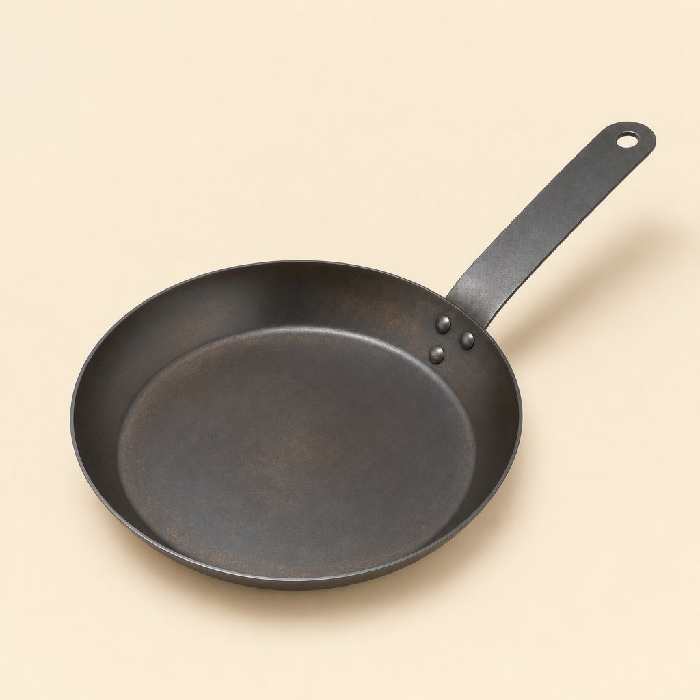

Home / Gear / The Camp Skillet
The Camp Skillet (10-inch carbon steel)
$68

Add to cart Free US shipping on orders $75+ · Ships in 1–2 business days
What it is
A trail-tested, 10-inch carbon-steel pan formed and riveted by a family-run metal shop in Ohio. It heats quickly, takes high heat, and moves from breakfast coals to the home oven without complaint.
Rowan designed it after nine seasons of trail-crew cooking: big enough for four eggs and a pile of potatoes, light enough to carry to a lakeside site, and simple enough that there is nothing to melt, crack or unscrew. No coating, no wood, no plastic. Just steel, three rivets and a hang hole for the camp kitchen hook.
Specs
- Cook surface
- 10 inches
- Material
- 2 mm carbon steel
- Weight
- 3.1 lb
- Handle
- Riveted flat steel with hang hole
- Finish
- Pre-seasoned with grapeseed oil and beeswax
- Heat sources
- Campfire grate, coals, gas, electric, induction, and oven
How to use it
Warm the pan gradually, add a little cooking fat, and cook over a steady heat zone. Over a fire, turn the handle away from foot traffic and use a dry mitt. The handle gets hot.
Care
Scrape or rinse while warm, dry completely over low heat, then wipe on a whisper-thin coat of oil. See our carbon-steel care guide for seasoning and rust rescue.
Carbon steel or cast iron?
Carbon steel behaves a lot like cast iron (it seasons, it sears, it lasts decades) but it's thinner and roughly half the weight of a cast-iron pan this size. That makes it better in a pack or a canoe barrel, and quicker to respond when you move it between hot and cool zones on the grate. The tradeoff: it holds less heat, so a cold steak will drop the pan temperature more. Preheat a little longer and cook in smaller batches.
Questions we hear a lot
Is it ready to cook out of the box? Yes. It ships pre-seasoned with grapeseed oil and beeswax. The first few meals should be fatty ones (bacon, fried potatoes, smash burgers) to build the season faster. Expect it to look blotchy and brown at first; it darkens toward black with use.
Will it work on my induction cooktop? Yes. Carbon steel is magnetic. The base is flat when cold; like any thin steel pan it can flex slightly if you blast it empty on high, so preheat on medium.
Can it sit directly in the coals? Yes, but a grate gives you far better control. Direct coals put all the heat in the center of the pan.
Is it a good gift? It's our most-gifted piece, especially with the Forged Ember Tongs. Add a gift note at checkout and we leave prices off the packing slip.
Good to know
It is not dishwasher safe. Acidic food can lift young seasoning. Carbon steel will darken, spot, and develop a patina with use; that changing surface is part of the material.
Guarantee
Covered for life against manufacturing defects. Rust and patchy seasoning are usually repairable, and we will help. See returns and our guarantee.